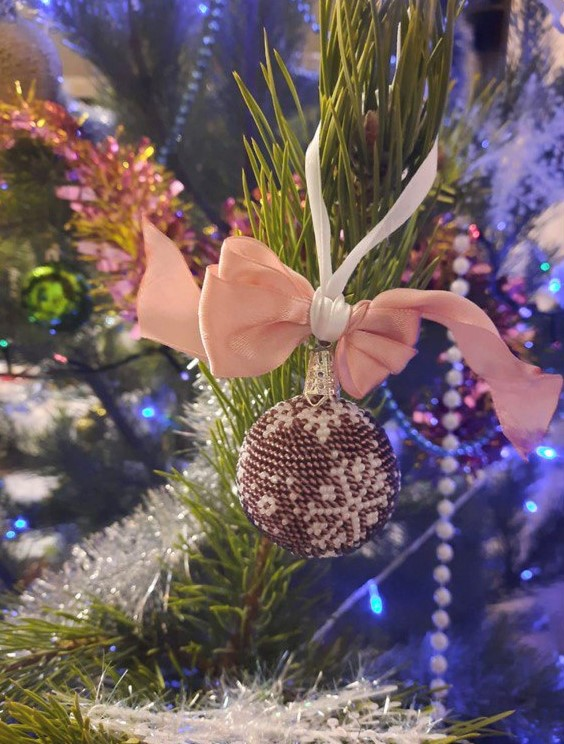
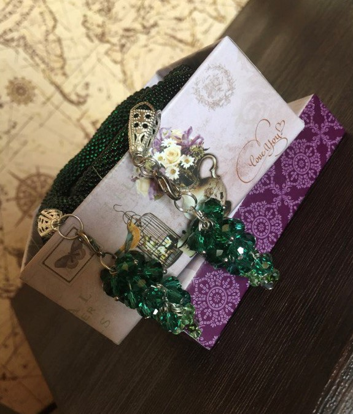
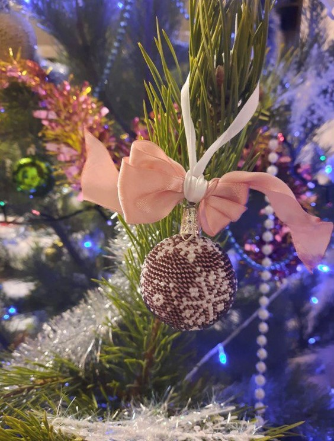
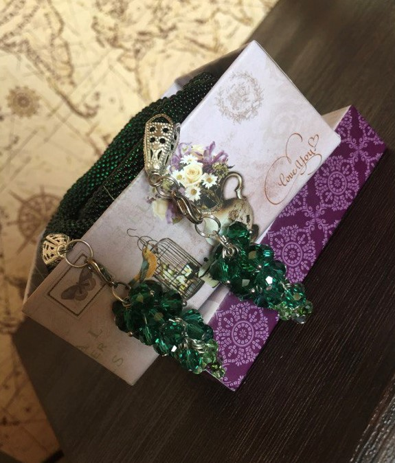

За свои без малого 28 лет я успела накопить кучу хобби и увлечений
Давайте я расскажу о паре из них
Бисероплетением я занимаюсь с 10 лет и все свбодное время,когда руки свободны, плела/вязала/вышивала.
Но мне надоело копить и дарить украшения и игрушки,поэтому пару лет назад я начала осваивать вязание)
Так что теперь можно смело сказать что:
 



Это система знаний об уникальности человека на стыке науки и эзотерики.
Генетика, биология, квантовая физика, астрология, каббала, чакры, «И-Цзин» – это все переплетено в одной
карте,называющейся бодиграфом.
Итак, простыми словами, Дизайн Человека - это инструкция к самому себе и к счастливой жизни.
Он не предсказывает будущее.Дизайн говорит,что ты уникален,со своими сильными сторонами и ограничениями
В другом контекте я бы представилась так:
"Всем привет) Я Таня - классический генератор 6/2 на кресте циклов🙈 Вот моя рейв-карта"
Если интересно,то построить свою карту можно тут:
Здесь вы можете построить свой бодиграф
В моей жизни 17 лет присутствовала русская
голубая кошка.
Все,кто хотя бы раз в жизни заводили котенка этой породы на других не согласны.
Достаточно посмотреть в эти зеленые глаза,чтоб влюбиться на всю жизнь
Поэтому сейчас мое свободное время занято поисками котенка и переговорами о его безопасной доставке😻